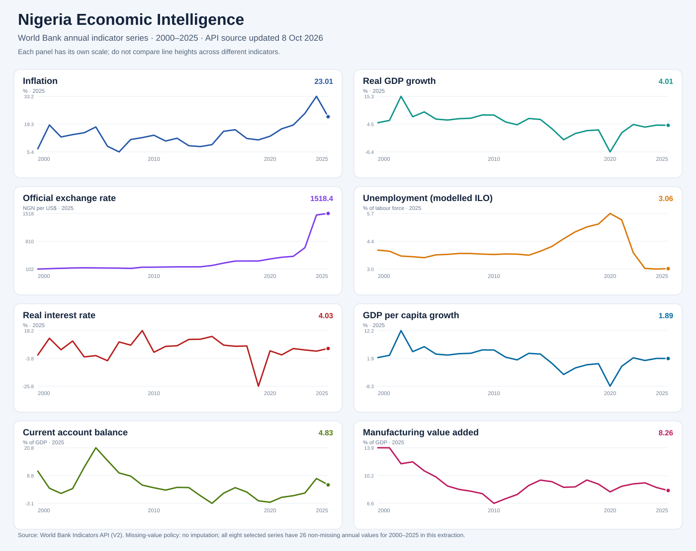

PUBLIC DATA · ECONOMICS · QUANTITATIVE RESEARCH
Nigeria Economic Intelligence: latest indicators with explicit periods
An auditable public-data monitor that pairs macroeconomic and development indicators with observation years, source links, data provenance, and disciplined interpretation.
Historical dashboard · 2000–2025
The eight selected time series below are sourced from the World Bank Indicators API. Each chart uses its own scale; exact annual observations and source metadata are available in the linked CSV.

Why this project exists
A useful economics portfolio needs evidence from published data as well as synthetic model demonstrations. This project records the latest available observations from World Bank pages, preserves each indicator's reference year, and includes a separate API extraction script for historical analysis.
The values shown here are a curated latest-value snapshot checked on 25 October 2026. They are not a common-year panel, and publishers may revise historical series.
Data table
| Indicator | Year | Value | Source |
|---|---|---|---|
| Inflation, consumer prices (annual %) | 2025 | 23.0% | World Bank / IMF IFS |
| GDP growth (annual %) | 2025 | 4.0% | World Bank |
| Population total | 2025 | 237,527,782 | World Bank |
| Access to electricity (% of population) | 2024 | 62.5% | World Bank |
| Individuals using the Internet (% of population) | 2024 | 41.0% | World Bank |
Reproducible workflow
- Fetch historical indicator observations using the version 2 World Bank Indicators API.
- Retain country, indicator code, observation year, value, retrieval timestamp, and source URL.
- Profile coverage and missingness by indicator.
- Report each series' latest non-missing year rather than assuming all data share the same period.
- Export a wide time-series table, coverage diagnostics, charts, and an executive brief.
Interpretation guardrails
- Co-movement between inflation, output, exchange rates, and interest rates does not establish causality.
- Official exchange-rate series do not describe every foreign-exchange market.
- Modelled ILO unemployment estimates can differ from national survey definitions.
- National aggregates do not reveal distributional effects across households or firms.
Sources and limitations
Source values are linked directly to World Bank country and indicator pages. Inflation is reported as 23.0% for 2025 and GDP growth as 4.0% for 2025 on the current Nigeria country profile; electricity access and internet-use observations are 2024 values. Use the linked indicator pages for definitions and revisions.
World Bank API documentation ↗
The curated snapshot is a latest-value reference extract. The API scripts provide the route to a full annual series when run in an environment with network access; the snapshot should be rechecked before formal research or policy publication.
Findings from the historical series
- Disinflation, not deflation: annual CPI inflation declined from 33.24% in 2024 to 23.01% in 2025, but the annual inflation rate remained positive.
- Growth held near 4%: real GDP growth changed from 4.07% in 2024 to 4.01% in 2025; GDP per capita growth was 1.89% in 2025.
- Official exchange-rate level rose sharply: the annual average increased from NGN 645.19 per US$ in 2023 to NGN 1518.38 in 2025, about 2.35 times the 2023 level.
- Current account remained positive: the balance moved from 7.54% of GDP in 2024 to 4.83% in 2025.
- Structural and labour-market caveat: manufacturing value added was 8.26% of GDP in 2025. The modelled ILO unemployment series is not a complete view of underemployment, informality or job quality.
These are descriptive statistics, not causal estimates. Price stability, real incomes and distribution cannot be inferred from one annual rate or aggregate alone.